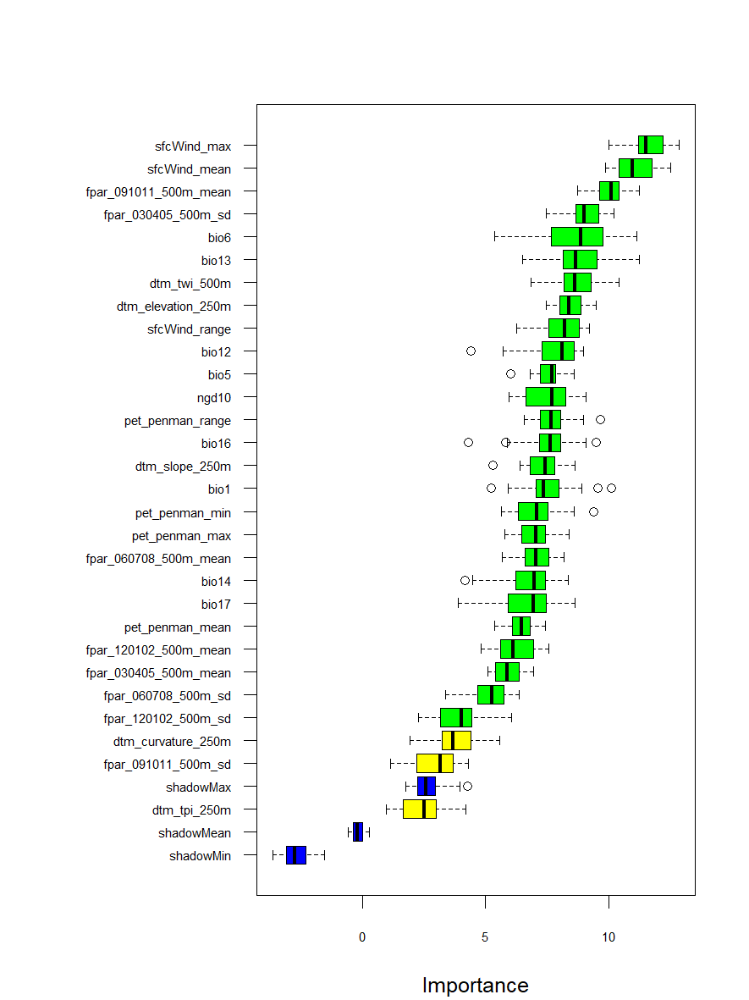
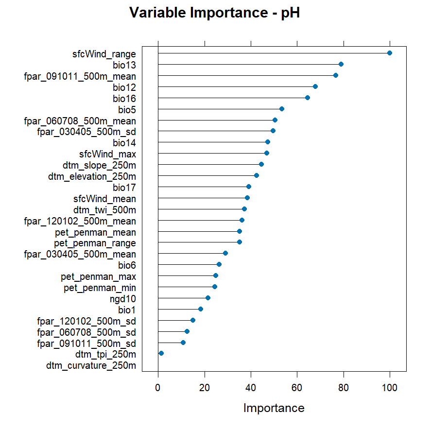
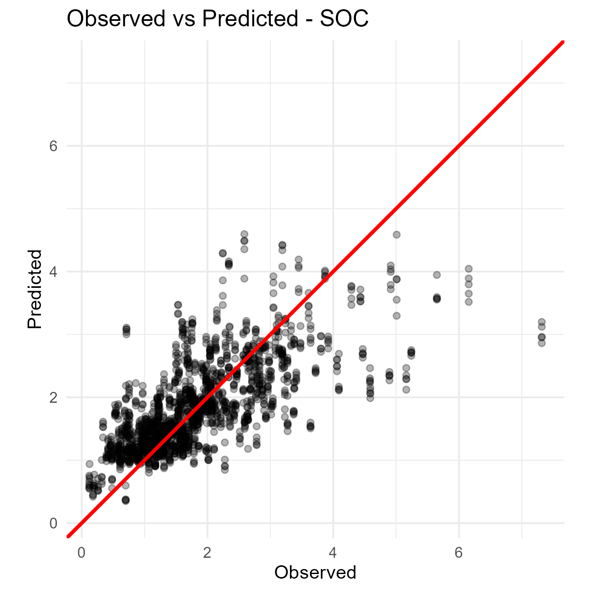
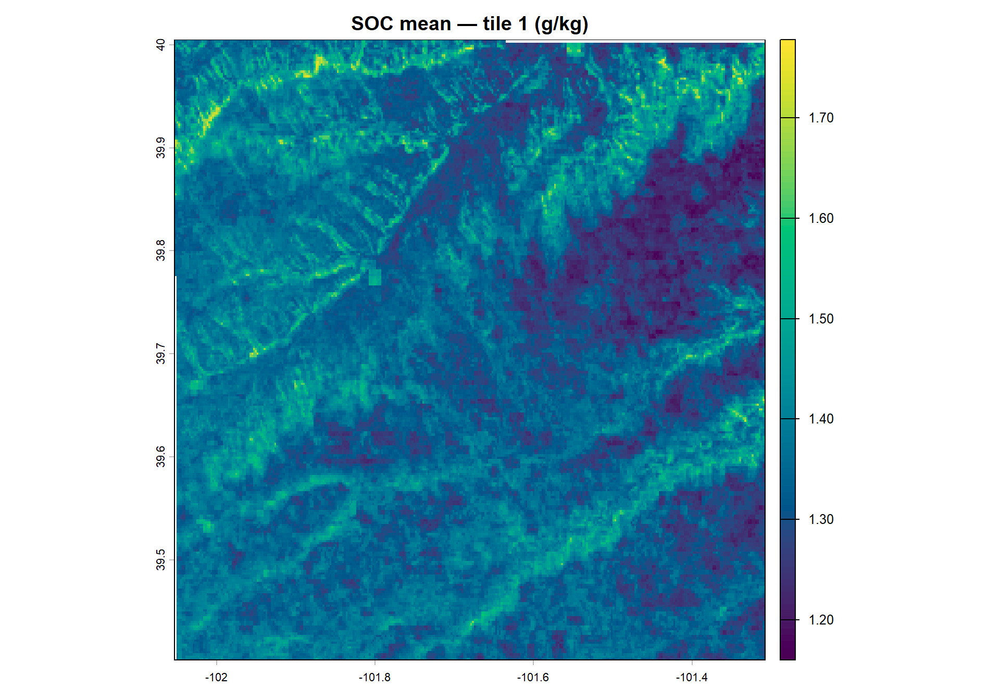
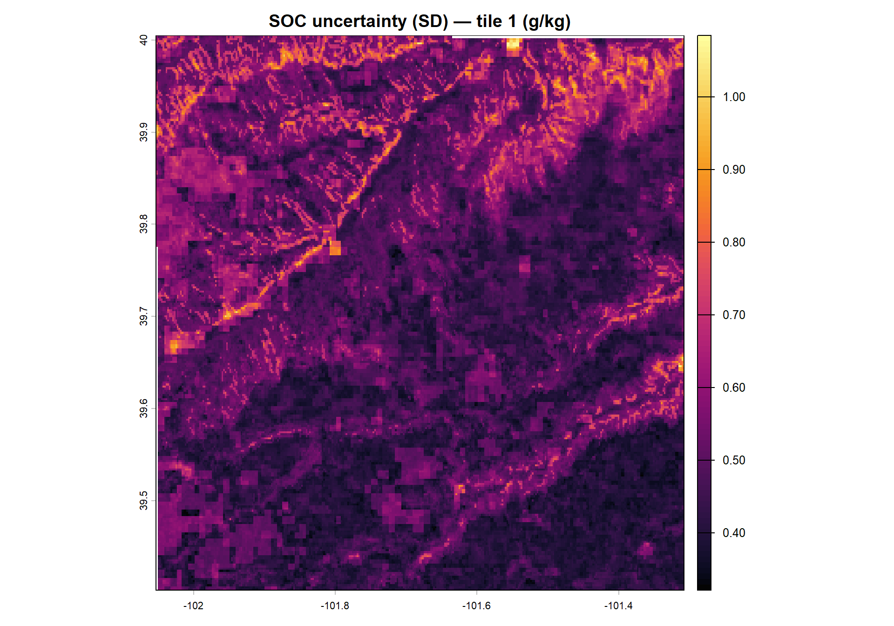

Module 3 Digital Soil Mapping
3.1 Fundamentals of Digital Soil Mapping
3.1.1 Introduction to Digital Soil Mapping
Digital soil mapping (DSM) is a modern approach that uses quantitative methods to create soil maps. It combines field observations, laboratory data, and environmental information within a spatial framework (Lagacherie, 2008). DSM represents a significant change from traditional soil survey, where maps were created based mainly on expert knowledge and manual interpretation of landscapes.
Traditional soil survey relied on a soil surveyor’s conceptual model of the landscape. Surveyors used aerial photographs, satellite images, and field observations to identify soil patterns. However, this approach had important limitations: maps were subjective, difficult to update, and lacked quantitative measures of uncertainty (Minasny and McBratney, 2016).
The evolution towards digital methods began in the 1970s when researchers started using computers to store and analyse soil data. Webster, Lessells and Hodgson (1979) demonstrated early digital soil cartography in England, while soil information systems were developed to manage soil databases. During the 1980s, the development of geographic information systems (GIS) and geostatistics provided new tools for spatial analysis. The 1990s brought advances in digital terrain modelling, data mining, and machine learning methods such as classification trees and neural networks.
The success of DSM in the early 2000s resulted from several factors: increased availability of digital elevation models and satellite imagery, greater computing power, development of data mining tools, and a growing global demand for soil information with uncertainty estimates (Minasny and McBratney, 2016). Universities and research centres began producing soil maps that were previously only made by national survey agencies.
Today, DSM is defined as the creation of spatial soil information systems using field and laboratory observations combined with spatial inference methods (Lagacherie and McBratney, 2006). The theoretical framework for DSM was formalised in 2003, establishing the conceptual basis that guides current practice.
3.1.2 The SCORPAN Framework
The conceptual and methodological foundations of DSM were formalised by the scorpan framework (McBratney, Mendonça Santos and Minasny, 2003). This model represents a quantitative expansion of the classical factors of soil formation originally proposed by Dokuchaev in 1883 and later refined by Jenny (1941 b). While Jenny’s clorpt model (climate, organisms, relief, parent material, time) was developed to explain soil genesis, the scorpan framework transforms this explanatory approach into an empirical predictive tool for spatial mapping.
The fundamental distinction between the two frameworks lies in their purpose. Jenny’s model describes how soils form through the interaction of environmental factors over time—it is a qualitative, theoretical framework. The scorpan approach, in contrast, does not attempt to explain soil formation mechanistically but rather exploits empirical relationships between soil and environmental variables for prediction (McBratney, Mendonça Santos and Minasny, 2003). As noted by the authors, the direction of causality is not considered: where evidence of a relationship exists, it can be used for prediction regardless of whether the factor causes or is caused by soil properties.
The scorpan acronym identifies seven environmental factors that influence soil distribution:
- s: soil—other properties of the soil at a point, including information from prior maps, proximal or remote sensing, or expert knowledge
- c: climate—properties of the environment such as precipitation, temperature, and evapotranspiration
- o: organisms—vegetation, fauna, or human activity, often represented by land cover or spectral indices
- r: relief—topographic attributes derived from digital elevation models
- p: parent material—lithology and geological substrate
- a: age—the time factor representing soil development duration or geomorphic surface age
- n: space—spatial position expressed as geographic coordinates
Two additional factors distinguish scorpan from Jenny’s original formulation. First, soil itself (s) is included as a predictor because soil properties can be predicted from other soil attributes measured at the same location or from existing soil maps. Second, the spatial factor (n) explicitly incorporates geographic position, which captures spatial trends and autocorrelation not explained by the other environmental factors (McBratney, Mendonça Santos and Minasny, 2003). The spatial coordinates can be used directly or transformed into derived variables such as distance to coast or distance from discharge areas.
The general pedometric model is formulated as:
\[S_c = f(s, c, o, r, p, a, n) + \varepsilon\]
or for soil attributes:
\[S_a = f(s, c, o, r, p, a, n) + \varepsilon\]
This can be expressed more compactly as:
\[S = f(Q) + \varepsilon\]
where \(S\) denotes a soil class (\(S_c\)) or attribute (\(S_a\)) at a specific location, \(f(Q)\) represents a deterministic function of the scorpan covariates, and \(\varepsilon\) represents the spatially autocorrelated residual. The complete methodological approach is termed scorpan-SSPFe (Soil Spatial Prediction Function with spatially autocorrelated errors), where deterministic predictions from \(f(Q)\) are complemented by geostatistical modelling of residuals to account for spatial structure not captured by the covariates (McBratney, Mendonça Santos and Minasny, 2003).
Each scorpan factor is represented by one or more environmental covariates. For example, climate (c) may be represented by mean annual precipitation and temperature; relief (r) by slope, aspect, curvature, and terrain wetness index; and organisms (o) by satellite-derived vegetation indices such as NDVI. The selection of covariates depends on data availability, mapping scale, and the soil property being predicted.
The scorpan-SSPFe approach represents a paradigm shift in soil mapping (McBratney, Mendonça Santos and Minasny, 2003). While the conventional Jenny model follows a deductive-nomological framework, the scorpan approach follows an inductive-statistical model of explanation. Both frameworks share the same ontological basis—soil as a function of environment—but differ fundamentally in methodology and apparatus. The scorpan approach requires digital data, computing resources, and statistical methods for fitting \(f()\), whereas traditional mapping relies primarily on expert mental models and field interpretation.
3.1.3 Statistical Theory for Predictive Soil Mapping
The spatial heterogeneity of soil properties results from complex interactions among soil-forming factors that are often only partially characterised. While the deterministic influences of climate, organisms, relief, parent material, and time are well-recognised, their synergistic interaction over pedogenic timescales presents significant challenges for mechanistic modelling (Heuvelink and Webster, 2001). Soil varies continuously in space and time, and any description of this variation is inevitably incomplete. Soil scientists must therefore represent this variation using models that combine deterministic and stochastic components (Heuvelink and Webster, 2001).
3.1.3.1 Mechanistic versus Empirical Approaches
Mechanistic modelling (also referred to as process-based or white-box modelling) involves the mathematical representation of soil systems based on known physical, chemical, and biological processes. Unlike empirical models that rely on statistical correlations, mechanistic models attempt to simulate the actual mechanisms of soil formation and function—such as water movement, solute transport, organic matter decomposition, and soil erosion—over time and space (Wadoux, Minasny and McBratney, 2021). These models typically use systems of differential equations to describe the state of the soil system and its evolution.
Wadoux, Minasny and McBratney (2021) distinguish between mechanistic and functional (empirical) models for soil mapping. Mechanistic models have structures based on mechanisms derived from knowledge of physical processes and soil chemical and biological reactions. Examples include soil erosion and deposition models, soil-landscape evolution models, and soil carbon dynamics models. However, the main problems with mechanistic approaches are that they require adequate mechanistic understanding of major soil processes, need extensive input data that are often unavailable, have many parameters that are difficult to infer, are computationally challenging, and typically do not quantify prediction uncertainty.
Although advancements have been made in modelling vertical soil variation through process-based approaches, these methods remain primarily experimental and are not yet suitable for large-scale operational soil mapping (Zhang et al., 2024). Consequently, most operational DSM follows an empirical approach. Instead of simulating every physical process, empirical models use statistical relationships between soil properties and environmental covariates to make predictions (McBratney, Mendonça Santos and Minasny, 2003).
Recent research has explored hybrid approaches that integrate process-oriented (PO) and machine learning (ML) models. Zhang et al. (2024) proposed a framework where PO model outputs serve as additional covariates for ML models, combining the ability of PO models to capture temporal dynamics with the spatial prediction accuracy of ML models. This integration represents a promising avenue for dynamic soil mapping that addresses one of the ten challenges for the future of pedometrics (Wadoux, Minasny and McBratney, 2021).
3.1.3.2 Sources of Residual Variance
Regression models frequently account for only a portion of the total soil variance. This limitation arises from several factors (Hengl, Heuvelink and Rossiter, 2007; Wadoux, Minasny and McBratney, 2021):
- Model structure limitations: The deterministic model structure may fail to represent actual mechanistic pedogenic processes adequately.
- Missing causal factors: Models often exclude significant causal factors that influence soil variation.
- Covariate limitations: Environmental covariates serve as incomplete proxies for true soil-forming factors (see section below).
- Measurement errors: Covariates contain inherent measurement errors or suffer from scale (support) mismatches relative to soil observations.
- Spatial scale effects: Soil properties vary at spatial scales from the atomic to the global, and the factors causing variation at one scale may differ from those at other scales (Wadoux, Minasny and McBratney, 2021).
Given these constraints, soil spatial models often exhibit substantial residual variance. When these residuals demonstrate spatial autocorrelation—quantifiable through variogram analysis—the application of kriging techniques to the residuals can significantly improve prediction accuracy (Hengl, Heuvelink and Rossiter, 2007; McBratney, Mendonça Santos and Minasny, 2003).
3.1.3.3 Covariates as Proxies of Soil-Forming Factors
In DSM, we use the terms proxy and covariate when referring to environmental data layers used to predict soil properties. A proxy is an indirect measurement of a variable that is difficult to measure directly. Since we cannot measure the exact historical climate or the precise biological activity that has occurred at every location over millennia, we use available data that correlates with these processes (McBratney, Mendonça Santos and Minasny, 2003).
For example, a Normalized Difference Vegetation Index (NDVI) map derived from satellite imagery is not the “organisms” factor itself but serves as a proxy for vegetation biomass and productivity, which influences organic matter inputs to the soil.
While the scorpan framework is based on soil-forming factors, the digital layers we input into models are mathematical representations rather than the physical factors themselves. There are four primary reasons for this distinction (Kempen et al., 2009; Lagacherie, 2008):
- Temporal mismatch: Soil formation occurs over centuries or millennia, but most climate covariates are based on the last 30 to 50 years of data. These represent proxies for the long-term climate that actually formed the soil.
- Information loss and simplification: A Digital Elevation Model represents relief, but it is a grid of numbers representing average heights within pixels. It misses fine-scale terrain nuances that influence water flow and erosion.
- Measurement error: Every digital layer contains inherent errors. Satellite sensors have noise, and climate station data are interpolated across spatial gaps.
- Indirect correlation: Often, a covariate represents multiple factors simultaneously. Elevation (relief) correlates strongly with temperature (climate), making it a statistical surrogate rather than a pure physical factor.
3.1.3.4 The Universal Model of Soil Variation
In DSM, we mathematically decompose soil variation into distinct components to better understand and predict soil patterns. This decomposition follows the Universal Model of Soil Variation (Heuvelink and Webster, 2001; Webster and Oliver, 2007):
\[Z(s) = m(s) + \varepsilon'(s) + \varepsilon''(s)\]
Where:
- \(Z(s)\): The value of a soil property at a specific location (\(s\))
- \(m(s)\): The deterministic component (trend)—the part of soil variation explained using environmental covariates
- \(\varepsilon'(s)\): The spatially correlated stochastic component—variation that follows a spatial pattern but is not captured by covariates
- \(\varepsilon''(s)\): The pure noise—measurement errors and fine-scale variation
This decomposition provides the theoretical foundation for hybrid interpolation methods such as regression-kriging, where the trend \(m(s)\) is modelled as a function of environmental covariates and the spatially correlated residual \(\varepsilon'(s)\) is interpolated using kriging (Hengl, Heuvelink and Rossiter, 2007; Odeh, McBratney and Chittleborough, 1995).
Hengl, Heuvelink and Rossiter (2007) demonstrated that regression-kriging explicitly separates trend estimation from residual interpolation, allowing the use of arbitrarily complex regression forms. The method can be expressed as:
\[\hat{Z}(s_0) = \hat{m}(s_0) + \hat{\varepsilon}'(s_0)\]
where \(\hat{m}(s_0)\) is predicted from the regression model and \(\hat{\varepsilon}'(s_0)\) is obtained by kriging the regression residuals.
3.1.3.5 Extending the Model: Space, Depth, and Time (3D+T)
While a 2D map describes soil variation at a single depth layer, soils are three-dimensional bodies that change over time. The Universal Model can be generalised to include depth (\(d\)) and time (\(t\)) (Heuvelink and Webster, 2001):
\[Z(s, d, t) = m(s, d, t) + \varepsilon'(s, d, t) + \varepsilon''(s, d, t)\]
This 3D+T (spatio-temporal) model allows tracking how soil properties change with depth and evolve over time. Heuvelink et al. (2016) noted that 3D kriging, where depth is treated as a third dimension, has important advantages because predictions at any depth interval can be made. However, modelling vertical variation realistically is challenging due to zonal and geometric anisotropies and discontinuities at horizon boundaries. Soil observations are typically averages over depth intervals and cannot be treated as vertical points. Mass-preserving splines have been developed to address this issue (Bishop, McBratney and Laslett, 1999; Orton et al., 2014), though they introduce additional uncertainties.
Example: Weekly Soil Moisture Mapping A classic example of the need for spatio-temporal modelling is soil moisture. Unlike soil texture (which changes very slowly over decades), soil moisture fluctuates daily or weekly based on rainfall and evaporation. Creating weekly maps of soil moisture requires a space-time framework considering location (\(s\)), time (\(t\)), and depth (\(d\)) simultaneously.
However, moving from 2D to 3D+T significantly increases analytical complexity. Each additional dimension requires more model parameters to be estimated, and the data requirements increase substantially.
2D+T and 3D+T models: Because data requirements for 2D+T and 3D+T models are high, they remain experimental in many regions. For most projects, focusing on high-quality 2D or 3D (depth-only) mapping is the standard starting point. Recent developments in integrating process-oriented models with machine learning offer promising approaches for capturing temporal dynamics while maintaining spatial prediction accuracy (Zhang et al., 2024).
3.1.4 Types of Soil Variables
Soil variables are classified into two fundamental categories based on their mathematical nature, and this distinction has important implications for the choice of prediction methods (McBratney, Mendonça Santos and Minasny, 2003):
Continuous Variables (Soil Properties): These are attributes measured on a numerical scale that can take any value within a range. Common examples include clay content (%), soil organic carbon concentration (g kg⁻¹), pH, bulk density (g cm⁻³), and cation exchange capacity (cmol kg⁻¹). From a pedological perspective, these properties typically change gradually across space, reflecting the continuous nature of soil variation (Heuvelink and Webster, 2001). However, some properties may exhibit abrupt changes at lithological boundaries or landscape discontinuities.
Categorical Variables (Soil Classes): These represent qualitative groups or discrete soil attributes. Examples include soil taxonomic units (e.g., Mollisol, Alfisol), drainage classes, or horizon designations. Traditional soil classification follows a “top-down” model where soils are divided into mutually exclusive classes with sharp conceptual boundaries (Odgers, McBratney and Minasny, 2011). However, the intrinsic variability of soil means that soil usually does not exist as discrete bodies with sharp boundaries between them—either physical boundaries in the natural landscape or conceptual boundaries in the feature space (Heuvelink and Webster, 2001; Odgers, McBratney and Minasny, 2011).
The Soil Continuum Problem: In reality, soil grades more or less gradually from one class to another, both in the landscape and in feature space (Odgers, McBratney and Minasny, 2011). This has led to the development of continuous classification approaches using fuzzy set theory, where objects can belong to multiple classes with membership values that sum to one (Heuvelink and Webster, 2001). Fuzzy classification provides a more realistic representation of soil variation by quantifying the degree of similarity between soil profiles and class centroids.
3.1.5 Prediction Methods
The mathematical nature of soil variables determines the type of statistical method used to create predictive maps (McBratney, Mendonça Santos and Minasny, 2003):
Regression for Continuous Properties: For continuous variables, regression algorithms establish numerical relationships between soil properties and environmental covariates. Methods range from linear approaches (ordinary least squares, generalised linear models) to non-linear techniques (generalised additive models, regression trees, neural networks, and ensemble methods such as Random Forest). The advantage of tree-based methods over linear models is their ability to handle nonlinearity and non-additive behaviour without requiring interactions to be pre-specified (Breiman et al., 1984; McBratney, Mendonça Santos and Minasny, 2003).
Classification for Soil Classes: For categorical variables, classification algorithms calculate the probability of a location belonging to specific soil classes. Methods include discriminant analysis, logistic regression, classification trees, and machine learning classifiers. Rather than producing a single “hard” classification, modern approaches often output class membership probabilities for each location, providing a richer representation of prediction uncertainty (Kempen et al., 2009; McBratney, Mendonça Santos and Minasny, 2003).
Hybrid Approaches: Some methods can handle both continuous and categorical data simultaneously. Classification and regression trees (CART) exemplify this flexibility, automatically determining splitting variables and points based on the data structure (Breiman et al., 1984). Tree-based models are particularly valued for their interpretability compared to methods like neural networks or generalised additive models (McBratney, Mendonça Santos and Minasny, 2003).
3.1.6 Nonlinearity and Uncertainty
A fundamental characteristic of soil-environment relationships is that they are often non-linear and complex (Minasny and McBratney, 2016). Environmental factors do not always influence soil properties in simple, linear ways. Terrain attributes may have threshold effects, climate interactions may be multiplicative, and biological processes introduce additional complexity. Because predictive models are simplified representations of natural processes, they are never fully accurate.
Unlike traditional soil maps that provide a single deterministic view, digital soil mapping enables the quantification of prediction uncertainty. This means that for every prediction, we can provide measures of confidence indicating where the model is reliable and where additional data might be needed (Padarian and McBratney, 2023; Styc and Lagacherie, 2021). Uncertainty can be expressed through:
- Prediction intervals: Upper and lower bounds within which the true value is expected to fall with a specified probability (e.g., 90% confidence interval)
- Standard deviation or variance: Measures of prediction spread around the mean estimate
- Prediction interval coverage probability (PICP): Assessment of whether stated confidence intervals actually contain the expected proportion of true values (Styc and Lagacherie, 2021)
However, Padarian and McBratney (2023) noted that uncertainty estimates remain underutilised in practice. Around 50% of DSM studies still do not report uncertainty assessments, and end users often find uncertainty maps difficult to interpret alongside target variable maps. This challenge has motivated new approaches for communicating uncertainty, including variable-resolution maps where pixel size encodes prediction confidence.
3.2 Practical Implementation Example
3.2.1 Overview
This section is a step-by-step companion to the script
modelling_&_mapping_v2.R. Its goal is to bridge the transition from
the soil data and environmental covariates explored in the preceding
chapters to the full prediction workflow: a map of the target soil
property and a map of its associated uncertainty.
The script focuses on continuous soil variables — the most common case in DSM, covering properties such as soil organic carbon (SOC), clay content, and bulk density. The workflow is divided into two sessions:
- Session 1: data preparation, covariate selection, model training, and cross-validation accuracy assessment.
- Session 2: spatial prediction across the study area and generation of the final maps.
How to use this guide. Open the R script alongside this chapter. Read each section here before running the corresponding block in the script. Section numbers match the numbered comments in the script. Code blocks are shown for reference — run them from the script in RStudio, not from this document.
3.2.2 Setup and Packages
rm(list = ls())
gc()
library(tidyverse)
library(caret)
library(terra)
library(Boruta)
library(ranger)
library(mapview)
Sys.setenv(PROJ_LIB = "")
Sys.setenv(PROJ_DATA = system.file("proj", package = "terra"))rm(list = ls()) removes every object from memory; gc() releases unused RAM. Starting clean prevents objects from a previous session from silently affecting results.
Each package has a specific role:
| Package | Role |
|---|---|
| tidyverse | Reading CSV files, manipulating tables, plotting |
| terra | Reading and writing raster and vector spatial data |
| caret | Model training, cross-validation, hyperparameter tuning |
| ranger | Fast Random Forest implementation used by caret internally |
| Boruta | Feature selection: identifies which covariates genuinely help |
| mapview | Quick interactive maps for visual quality checks in RStudio |
The two Sys.setenv() lines reset the PROJ database path to terra’s bundled copy. PROJ defines coordinate reference systems; conflicting paths left by other packages cause cryptic reprojection errors.
setwd(dirname(rstudioapi::getActiveDocumentContext()$path))
setwd("../../")
for (d in c("03_outputs/module3/models/",
"03_outputs/module3/validation/",
"03_outputs/module3/tiles/",
"03_outputs/module3/maps/",
"03_outputs/module3/maps/aoa/",
"terra_tmp")) {
if (!dir.exists(d)) dir.create(d, recursive = TRUE)
}
terraOptions(progress = 1, memfrac = 0.6, tempdir = file.path(getwd(), "terra_tmp"))setwd() navigates from the script folder up two levels to the project root, making all subsequent file paths relative and portable. The for loop pre-creates every output folder needed by the workflow. terraOptions() enables a progress bar, allows terra to use 60% of available RAM before spilling to disk, and redirects large temporary raster files to a known folder inside the project.
Let me check the Excel file for the official descriptions:
Here is the complete Section 2 ready to copy-paste:
3.2.3 Load covariates
The environmental covariates are the predictors in the DSM model — the Q factor in
the S = f(Q) relationship introduced in Part I. They are stored as a multi-layer raster
stack (.tif) where each layer represents one spatially continuous variable.
covs <- rast("01_data/module1/training_data/Environmental_Covariates_250m_KANSAS.tif")
cov_names <- names(covs)
covs[[1]] # resolution, extent, CRS of the first layer
nlyr(covs) # total number of layers
plot(covs[[1]])rast() reads the file as a SpatRaster object (the terra equivalent of a raster
brick). The double-bracket operator [[i]] extracts a single layer by index or name
and returns a SpatRaster; the single-bracket [i] returns a subset of the stack
(still a multi-layer object). Use [[]] when you want to inspect or operate on one
layer.
The stack contains 29 covariates at 250 m resolution, organised into four SCORPAN-proxy groups:
| Layer name | SCORPAN group | Description |
|---|---|---|
| bio1 | Climate (C) | Annual mean temperature (°C × 10) |
| bio5 | Climate (C) | Max temperature of warmest month (°C × 10) |
| bio6 | Climate (C) | Min temperature of coldest month (°C × 10) |
| bio12 | Climate (C) | Annual precipitation (mm) |
| bio13 | Climate (C) | Precipitation of wettest month (mm) |
| bio14 | Climate (C) | Precipitation of driest month (mm) |
| bio16 | Climate (C) | Precipitation of wettest quarter (mm) |
| bio17 | Climate (C) | Precipitation of driest quarter (mm) |
| ngd10 | Climate (C) | Number of growing degree days above 10 °C |
| pet_penman_max | Climate (C) | Maximum potential evapotranspiration — Penman (mm) |
| pet_penman_mean | Climate (C) | Mean potential evapotranspiration — Penman (mm) |
| pet_penman_min | Climate (C) | Minimum potential evapotranspiration — Penman (mm) |
| pet_penman_range | Climate (C) | Range of potential evapotranspiration — Penman (mm) |
| sfcWind_max | Climate (C) | Maximum surface wind speed (m s⁻¹) |
| sfcWind_mean | Climate (C) | Mean surface wind speed (m s⁻¹) |
| sfcWind_range | Climate (C) | Range of surface wind speed (m s⁻¹) |
| fpar_030405_500m_mean | Organism (O) | Mean FPAR — spring (Mar–May), 500 m |
| fpar_030405_500m_sd | Organism (O) | SD of FPAR — spring (Mar–May), 500 m |
| fpar_060708_500m_mean | Organism (O) | Mean FPAR — summer (Jun–Aug), 500 m |
| fpar_060708_500m_sd | Organism (O) | SD of FPAR — summer (Jun–Aug), 500 m |
| fpar_091011_500m_mean | Organism (O) | Mean FPAR — autumn (Sep–Nov), 500 m |
| fpar_091011_500m_sd | Organism (O) | SD of FPAR — autumn (Sep–Nov), 500 m |
| fpar_120102_500m_mean | Organism (O) | Mean FPAR — winter (Dec–Feb), 500 m |
| fpar_120102_500m_sd | Organism (O) | SD of FPAR — winter (Dec–Feb), 500 m |
| dtm_elevation_250m | Relief (R) | Elevation (m asl), 250 m |
| dtm_slope_250m | Relief (R) | Slope (°), 250 m |
| dtm_curvature_250m | Relief (R) | Surface curvature (plan + profile), 250 m |
| dtm_tpi_250m | Relief (R) | Topographic Position Index (TPI), 250 m |
| dtm_twi_500m | Relief (R) | Topographic Wetness Index (TWI), 500 m |
FPAR (Fraction of Photosynthetically Active Radiation) captures seasonal vegetation dynamics and is a proxy for the Organism factor. Terrain derivatives (elevation, slope, curvature, TPI, TWI) represent Relief, which controls lateral water redistribution — a key driver of SOC accumulation.
Here is Section 3, ready to copy-paste:
3.2.4 Load and transform soil data
The soil observations come from the KSSL dataset prepared in Module 1. The file contains one row per sample, with columns for coordinates, texture fractions, and SOC.
3.2.4.1 Estimate bulk density with a pedotransfer function
A pedotransfer function (PTF) predicts a soil property that is difficult or expensive to measure directly from properties that are routinely available. Here we use the Saxton equation to derive bulk density (BD, g cm⁻³) from sand, clay, and SOC:
The %>% pipe passes dat as the first argument to mutate(), which adds the new
column BD without touching the existing columns. This keeps the transformation
readable and chainable.
Bonus track (commented out in the script): the same PTF framework can be extended to estimate Available Water Capacity (AWC) using the Rawls & Saxton (1982) equations. The commented block derives wilting point (WP) and field capacity (FC) from sand, clay, and organic matter, then calculates AWC = FC − WP. Uncomment it if AWC is a target variable or a covariate in your project.
3.2.5 Merge soil data and covariate values
To link each soil observation to its environmental context, we convert the dataframe to a spatial object, reproject it to match the covariate CRS, and extract the raster values at each sample location.
dat_pts <- vect(dat, geom = c("lon", "lat"), crs = "epsg:4326")
dat_pts <- terra::project(dat_pts, covs)
mapview(dat_pts, cex = 1.5)
extracted_covs <- terra::extract(x = covs, y = dat_pts, xy = TRUE, ID = FALSE)
summary(extracted_covs)
dat <- as.data.frame(dat_pts)
dat_cov <- bind_cols(dat, extracted_covs)vect() creates a SpatVector (the terra class for vector data) from the longitude and latitude columns, assigning geographic coordinates (EPSG:4326). terra::project() then reprojects the points to the same CRS as covs — this step is essential: if the CRS of the points does not match the raster, extract() will return all NA. mapview() opens an interactive map to visually verify that the points fall within the study area.
terra::extract() samples the raster stack at each point location and returns a dataframe with one row per point and one column per covariate layer. Setting xy = TRUE appends the projected coordinates, and ID = FALSE drops the auto-generated row-index column. Finally, bind_cols() joins the covariate values to the soil data, producing dat_cov — the complete modelling dataset that links S (soil observation) to Q (environmental covariates), as in the S = f(Q) formulation from Part I.
3.2.6 Feature selection with Boruta
Before training the model, we identify which covariates carry genuine predictive signal for SOC. Including irrelevant predictors inflates model complexity and can reduce accuracy.
target <- "SOC"
d <- dat_cov %>%
dplyr::select(all_of(target), all_of(cov_names)) %>%
na.omit() %>%
as.data.frame()na.omit() removes rows where any covariate value is missing (e.g. points that fall outside the raster extent). The result d is the clean training table used throughout the modelling workflow.
set.seed(1)
boruta_result <- Boruta(
y = d[, target],
x = d[, cov_names],
maxRuns = 25,
doTrace = 1
)How Boruta works. Boruta is a wrapper around Random Forest that tests each variable against a set of shadow variables — permuted (shuffled) copies of the originals that have no real relationship with the target. In each iteration, a Random Forest is trained on the original predictors plus their shadows. A predictor is classified as:
- Confirmed (green): its importance is consistently higher than the best shadow variable.
- Rejected (red): its importance is consistently lower.
- Tentative (yellow): the test is inconclusive after all runs.
maxRuns = 25 sets the number of Random Forest iterations. For a final analysis, increase this to at least 100 to stabilise decisions on tentative variables.

Figure 3.1: Boruta feature selection for SOC. Green = confirmed, red = rejected, yellow = tentative, blue = shadow variables.
getSelectedAttributes() returns the names of confirmed predictors. Setting withTentative = TRUE also includes tentative ones — a conservative choice that avoids discarding potentially useful variables.
Feature selection in DSM: two schools of thought. The field is divided on how to approach predictor selection. One tradition favours expert-guided selection: the practitioner chooses covariates based on known soil-forming processes, keeping the predictor set small, interpretable, and grounded in pedological theory. The opposing view argues for data-driven inclusion: feed all available covariates to the model and let the algorithm determine relevance — a pragmatic position when the environmental drivers of a given soil property are poorly understood or when the goal is purely predictive accuracy. Boruta sits between these extremes: it is automated and data-driven, but its output can still be audited against expert knowledge (e.g. rejecting a confirmed variable that has no plausible mechanistic link to the target, or overriding a rejection for a variable known to be important). In practice, the best approach depends on the study objective, the quality of the covariates, and the sample size available for model training.
3.2.7 Train the Quantile Regression Forest model
3.2.7.1 From Random Forest to Quantile Regression Forest
A standard Random Forest predicts the expected value (the mean) of the target variable at each new location. Each tree in the forest produces an estimate, and the final prediction is their average. This single number is useful, but it hides something important: it tells us what the model predicts, but not how confident we should be in that prediction.
Quantile Regression Forest (QRF) solves this by changing what each tree stores at its terminal nodes. Instead of keeping only the mean of the training observations that fall into a leaf, QRF retains all individual values. This seemingly small change has a powerful consequence: at any new location, the model can reconstruct the full conditional distribution of the target — not just its centre, but its spread, its skewness, and any quantile of interest.
In practice, this means QRF can produce prediction intervals. Rather than saying “SOC here is 25 g kg⁻¹”, the model can say “SOC here is 25 g kg⁻¹, and there is a 90% probability it falls between 18 and 34 g kg⁻¹”. A narrow interval signals high confidence; a wide interval is the model’s way of saying, transparently, that the environmental conditions at that location are poorly represented in the training data or that the local signal is inherently noisy.
Applied across the entire study area, this produces two complementary maps: a mean prediction map (the best estimate of SOC) and an uncertainty map (the conditional standard deviation, σ). Together they operationalise the Universal Model of Soil Variation introduced in Part I: ẑ(s) = m(s) ± σ(s). The uncertainty map is not a by-product — it is a primary output that guides interpretation, identifies where additional sampling is most needed, and supports risk-aware decision making.
The ranger package makes QRF computationally feasible at the scale of regional DSM studies. Enabling it requires a single argument: quantreg = TRUE.
3.2.7.2 Cross-validation setup
Before training, we define how the model will be evaluated during hyperparameter tuning. Repeated k-fold cross-validation splits the dataset into k folds, trains on k − 1 and tests on the held-out fold, then repeats the whole cycle several times to reduce variance in the performance estimate.
cv_control <- trainControl(
method = "repeatedcv",
number = 5,
repeats = 5,
savePredictions = TRUE
)savePredictions = TRUE stores the out-of-fold predictions for every hyperparameter combination, which we will use in Section 7 to compute validation metrics without re-running the model.
Limitation: standard CV assumes spatial independence. Random fold assignment means a training fold and its test fold may contain samples that are geographically close, allowing the model to exploit spatial autocorrelation. This leads to over-optimistic accuracy estimates. Spatial cross-validation (e.g.
CAST::CreateSpacetimeFolds()) addresses this by grouping spatially proximate samples into the same fold. For this training exercise we use standard CV; keep this limitation in mind when interpreting results.
3.2.7.3 Hyperparameter grid
| Parameter | Meaning |
|---|---|
| mtry | Number of covariates randomly sampled at each split |
| min.node.size | Minimum number of observations in a terminal node |
| splitrule | Split criterion: variance (standard RF) or extratrees (random splits — faster, sometimes more accurate) |
mtry_base <- round(length(selected_features) / 3)
tune_grid <- expand.grid(
mtry = c(mtry_base - round(mtry_base / 2),
mtry_base,
mtry_base + round(mtry_base / 2)),
min.node.size = 5,
splitrule = c("variance", "extratrees")
)mtry is initialised around the rule-of-thumb p/3 (where p is the number of selected features) and explored at three levels. expand.grid() produces every combination, yielding six candidate configurations.
3.2.7.4 Train the model
model <- caret::train(
y = d[, target],
x = d[, selected_features],
method = "ranger",
quantreg = TRUE,
importance = "permutation",
trControl = cv_control,
tuneGrid = tune_grid,
num.threads = max(1, parallel::detectCores() - 1)
)
model
model$bestTuneimportance = "permutation" measures how much accuracy drops when each predictor is randomly shuffled — a reliable, model-agnostic importance measure. num.threads uses all but one CPU core; adjust downward if the machine is needed for other tasks during training.

Figure 3.2: Permutation-based variable importance for the SOC model. Longer bars indicate stronger predictive contribution.
Variable importance ranks predictors by their contribution to model accuracy. In SOC models, climate and vegetation indices (FPAR) typically dominate, while terrain attributes play a secondary role — though this balance varies by region and target depth.
3.2.8 Accuracy assessment
Cross-validation accuracy is extracted from the predictions stored during training. Because caret evaluates every hyperparameter combination, we filter to the rows corresponding to the best configuration identified by model$bestTune.
cv_preds <- model$pred %>%
filter(mtry == model$bestTune$mtry,
splitrule == model$bestTune$splitrule,
min.node.size == model$bestTune$min.node.size)
obs_vals <- cv_preds$obs
pred_vals <- cv_preds$predThe eval() function, loaded from eval.RData, implements the accuracy framework proposed by Wadoux et al. (2021). It computes six complementary metrics from the vectors of observed (z) and predicted (ẑ) values:
| ME | MAE | RMSE | r | r2 | MEC |
|---|---|---|---|---|---|
| -0.02 | 0.5 | 0.72 | 0.7 | 0.49 | 0.49 |
Mean Error (ME) measures systematic bias — the average signed difference between predictions and observations:
\[ME = \frac{1}{n}\sum_{i=1}^{n}(\hat{z}_i - z_i)\]
A positive ME means the model systematically over-predicts; a negative ME means it under-predicts. Values near zero are desirable, but ME alone can be misleading: large positive and negative errors can cancel out.
Mean Absolute Error (MAE) avoids cancellation by averaging the absolute deviations:
\[MAE = \frac{1}{n}\sum_{i=1}^{n}|\hat{z}_i - z_i|\]
MAE is in the same units as the target variable and is straightforward to interpret: on average, predictions deviate from observations by this amount.
Root Mean Squared Error (RMSE) also measures average error magnitude but penalises large errors more heavily than small ones by squaring the deviations before averaging:
\[RMSE = \sqrt{\frac{1}{n}\sum_{i=1}^{n}(\hat{z}_i - z_i)^2}\]
RMSE is more sensitive to outliers than MAE. When RMSE >> MAE, a few large errors dominate the total error budget. Comparing both metrics together reveals the error distribution.
Pearson correlation coefficient (r) measures the strength and direction of the linear relationship between observed and predicted values:
\[r = \frac{\sum_{i=1}^{n}(z_i - \bar{z})(\hat{z}_i - \bar{\hat{z}})}{\sqrt{\sum_{i=1}^{n}(z_i - \bar{z})^2 \cdot \sum_{i=1}^{n}(\hat{z}_i - \bar{\hat{z}})^2}}\]
Values range from −1 to 1. Note that r measures association, not agreement: a model that consistently predicts twice the observed value would have r = 1 but poor accuracy. It should always be read alongside bias metrics.
Coefficient of determination (R²) quantifies the proportion of variance in the observations explained by the model:
\[R^2 = 1 - \frac{\sum_{i=1}^{n}(z_i - \hat{z}_i)^2}{\sum_{i=1}^{n}(z_i - \bar{z})^2}\]
Unlike r, R² is sensitive to systematic bias. A model with no bias and perfect correlation yields R² = 1; a model that predicts the observed mean for every point yields R² = 0.
Model Efficiency Coefficient (MEC) — also known as the Nash-Sutcliffe efficiency — is the most demanding of the six metrics. It compares the model’s squared errors against the squared deviations from the observed mean, i.e. the error one would incur by always predicting \(\bar{z}\):
\[MEC = 1 - \frac{\sum_{i=1}^{n}(z_i - \hat{z}_i)^2}{\sum_{i=1}^{n}(z_i - \bar{z})^2}\]
MEC = 1 is a perfect model. MEC = 0 means the model is no better than simply predicting the mean everywhere. MEC < 0 means the observed mean is a better predictor than the model — a clear sign of model failure. MEC is particularly informative in DSM because it directly benchmarks the spatial model against the null case of no spatial structure.
Tip: In practice, a MEC above 0.5 is often considered acceptable for DSM models of highly variable soil properties like SOC. Values above 0.7 indicate good model skill. If MEC is close to zero or negative, revisit the covariate stack — the predictors may not capture the main drivers of spatial variability at the target depth.
3.2.8.1 Observed vs predicted plot
residuals <- tibble(Observed = obs_vals, Predicted = pred_vals)
g_scatter <- ggplot(residuals, aes(x = Observed, y = Predicted)) +
geom_point(alpha = 0.3) +
geom_abline(slope = 1, intercept = 0, color = "red", linewidth = 1) +
ylim(c(min(residuals$Observed), max(residuals$Observed))) +
theme(aspect.ratio = 1) +
coord_fixed() +
labs(title = paste("Observed vs Predicted -", target)) +
theme_minimal()
g_scatter
Figure 3.3: Observed vs predicted SOC values from cross-validation. The red line is the 1:1 line; a perfect model places all points on it.
A common pattern in cross-validated scatterplots is regression to the mean: very high observed values tend to be under-predicted and very low values tend to be over-predicted. This reflects the model’s limited ability to extrapolate beyond the range well-represented in the training data, and is expected behaviour rather than a model failure. Wide scatter at intermediate values indicates that the covariates do not fully capture local SOC variability at those concentrations.
3.2.8.2 Save outputs
write_csv(accuracy, "03_outputs/module3/validation/accuracy.csv")
saveRDS(model, paste0("03_outputs/module3/models/ranger_model_", target, ".rds"))write_csv() saves the accuracy table for reporting and reproducibility. saveRDS() serialises the full caret model object — including the trained ranger forest, CV results, and tuning history. Session 2 reloads it with readRDS() to run spatial prediction without retraining.
Limitation: Cross-validation accuracy reflects performance on the training dataset, not on locations that are environmentally different from the sampled area. If the study region contains landscapes that are underrepresented in the samples (e.g. poorly drained soils, organic-rich wetland patches), the actual map error in those areas will be higher than the reported CV metrics suggest.
3.2.9 Reload the workspace
Session 2 is designed to be self-contained: it reloads all necessary objects from disk so you can run spatial prediction independently, without re-running Session 1. This is important in practice — model training can take hours, and you may want to experiment with prediction parameters without repeating the full workflow.
library(tidyverse)
library(caret)
library(terra)
library(ranger)
Sys.setenv(PROJ_LIB = "")
Sys.setenv(PROJ_DATA = system.file("proj", package = "terra"))
setwd(dirname(rstudioapi::getActiveDocumentContext()$path))
setwd("../../")
covs <- rast("01_data/module1/training_data/Environmental_Covariates_250m_KANSAS.tif")
cov_names <- names(covs)
target <- "SOC"
model <- readRDS(paste0("03_outputs/module3/models/ranger_model_", target, ".rds"))readRDS() reconstructs the full caret model object exactly as it was when saved, including the trained ranger forest and the optimal hyperparameter configuration.
3.2.10 Spatial prediction (tiled)
Predicting SOC across the full study area requires applying the model to every pixel of the covariate stack. For large rasters this is memory-intensive: loading the full stack and computing predictions simultaneously can exhaust available RAM. The solution is tiled prediction — splitting the study area into a grid of smaller tiles, predicting each tile independently, and mosaicking the results at the end.
3.2.10.1 Create tile grid
r <- covs[[1]]
t <- rast(nrows = 5, ncols = 10, extent = ext(r), crs = crs(r))
tile <- makeTiles(r, t, overwrite = TRUE,
filename = "03_outputs/module3/tiles/tiles.tif")
rast(tile[1]) %>% plotmakeTiles() divides the extent of a reference raster (r, here the first covariate layer) into a grid defined by t — a template raster with 5 rows and 10 columns of tiles. It writes one small .tif per tile and returns a vector of file paths. The grid here produces 50 tiles; each tile is a manageable chunk of the full extent.
Tip: The right number of tiles depends on your available RAM and the number of covariate layers. A rough guide: if
nlyr(covs) × nrow_tile × ncol_tile × 4 bytesexceeds ~60% of your free RAM, increase the number of tiles. You can inspect tile dimensions withrast(tile[1])before committing to the full prediction loop.
3.2.10.2 Prepare model for prediction
ranger_model <- model$finalModel
pfun <- function(...) {
predict(...)$predictions |> t()
}
gdal_opts <- c("COMPRESS=LZW", "TILED=YES", "BIGTIFF=IF_SAFER")model$finalModel extracts the raw ranger model from the caret wrapper — needed because terra::interpolate() calls predict() directly on the model object. The custom prediction function pfun wraps this call and transposes the output matrix (t()): ranger returns quantile predictions in a format where rows are quantiles and columns are pixels, but terra expects the opposite orientation.
gdal_opts sets three GDAL write options applied when saving rasters to disk: LZW lossless compression reduces file size significantly, tiled storage accelerates partial reads (e.g. when zooming in a GIS), and BIGTIFF=IF_SAFER automatically uses the BigTIFF format if the output exceeds 4 GB.
3.2.10.3 Prediction for one tile
Before running the full loop, we test the prediction pipeline on a single tile. This lets you verify that the output looks correct and estimate processing time per tile.
t1 <- rast(tile[1])
covs_t1 <- crop(covs, t1)
pred_mean_t1 <- terra::interpolate(covs_t1,
model = ranger_model,
fun = pfun,
na.rm = TRUE,
type = "quantiles",
what = mean)
pred_sd_t1 <- terra::interpolate(covs_t1,
model = ranger_model,
fun = pfun,
na.rm = TRUE,
type = "quantiles",
what = sd)
pred_cv_t1 <- pred_sd_t1 / pred_mean_t1
mapview(pred_mean_t1)terra::interpolate() applies the model to every pixel of the covariate tile. The what argument controls which summary of the quantile distribution is computed: what = mean returns the conditional mean (the best-estimate prediction map), and what = sd returns the conditional standard deviation (the uncertainty map). These correspond directly to m(s) and σ(s) in the Universal Model of Soil Variation.

Figure 3.4: SOC mean prediction for tile 1 (g/kg).

Figure 3.5: SOC prediction uncertainty (SD) for tile 1 (g/kg).
Reading the uncertainty map: high SD values indicate locations where the model is less confident — typically at the extremes of the environmental gradient, in areas with few nearby training samples, or where the covariate combination is unlike anything seen during training. These areas should be prioritised for additional soil sampling in future surveys.
3.2.10.4 Prediction at all tiles
Once the single-tile test is satisfactory, run the loop over all tiles:
for (j in seq_along(tile)) {
print(paste("Processing tile", j, "of", length(tile)))
t_j <- rast(tile[j])
covs_tile <- crop(covs, t_j)
mean_file <- paste0("03_outputs/module3/tiles/", target, "_mean_", j, ".tif")
terra::interpolate(covs_tile, model = ranger_model, fun = pfun,
na.rm = TRUE, type = "quantiles", what = mean,
filename = mean_file, overwrite = TRUE,
wopt = list(datatype = "FLT4S", gdal = gdal_opts))
sd_file <- paste0("03_outputs/module3/tiles/", target, "_sd_", j, ".tif")
terra::interpolate(covs_tile, model = ranger_model, fun = pfun,
na.rm = TRUE, type = "quantiles", what = sd,
filename = sd_file, overwrite = TRUE,
wopt = list(datatype = "FLT4S", gdal = gdal_opts))
}paste0() constructs the output file path dynamically for each tile index j. Writing directly to disk with filename = means terra never holds the full prediction in memory — each tile is computed and saved before moving to the next.
Processing time: with 50 tiles and a moderately sized training dataset, this loop typically takes 20–60 minutes depending on the number of trees, the tile size, and available CPU cores. Note that
terra::interpolate()is single-threaded per tile; running tiles in parallel requires an explicit parallelisation wrapper (e.g.foreach+doParallel).
3.2.11 Mosaic tiles into final maps
mean_tiles <- list.files("03_outputs/module3/tiles/",
pattern = paste0("^", target, "_mean_.*\\.tif$"),
full.names = TRUE)
mean_rasters <- lapply(mean_tiles, rast)
pred_mean <- mosaic(sprc(mean_rasters))
names(pred_mean) <- paste0(target, "_mean")
writeRaster(pred_mean,
paste0("03_outputs/module3/maps/mean_", target, ".tif"),
overwrite = TRUE,
wopt = list(datatype = "FLT4S", gdal = gdal_opts))
sd_tiles <- list.files("03_outputs/module3/tiles/",
pattern = paste0("^", target, "_sd_.*\\.tif$"),
full.names = TRUE)
sd_rasters <- lapply(sd_tiles, rast)
pred_sd <- mosaic(sprc(sd_rasters))
names(pred_sd) <- paste0(target, "_sd")
writeRaster(pred_sd,
paste0("03_outputs/module3/maps/sd_", target, ".tif"),
overwrite = TRUE,
wopt = list(datatype = "FLT4S", gdal = gdal_opts))
plot(pred_mean, main = paste("Mean", target), col = hcl.colors(100, "Viridis"))
plot(pred_sd, main = paste("SD", target), col = hcl.colors(100, "Inferno"))list.files() with a regular expression pattern collects all mean (or SD) tile files in the correct order. sprc() wraps the list of SpatRaster objects into a SpatRasterCollection, and mosaic() assembles them into a single seamless raster by averaging overlapping pixels (where tiles share edges). writeRaster() saves the final maps with the same GDAL options used during tiled prediction.
Note: the original script contains a typo in the SD output path (
outputs/maps/continuous/sd_). The corrected path used here (03_outputs/module3/maps/sd_) matches the directory structure created in Section 1 and is consistent with the mean map path.
What you have produced: at the end of this workflow you have two wall-to-wall rasters covering the study area — a map of predicted SOC (g/kg) and a map of its uncertainty (SD, g/kg). Together they constitute a complete DSM output ready for agronomic interpretation, soil carbon stock estimation, or as a baseline for monitoring change over time.